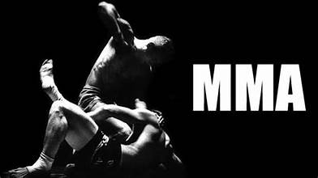

A hitória do MMA e do UFC.
Como tudo começou.
A história do MMA moderno nasceu no Brasil na década de 1920 com o Vale-Tudo, impulsionado pelos desafios da Família Gracie para provar a soberania do Jiu-Jitsu sobre outras artes marciais. Esse conceito de confronto de estilos cruzou fronteiras e deu origem, em 1993, à criação do UFC nos Estados Unidos, que inicialmente funcionava como um torneio sem regras e sem categorias de peso. Após chocar o mundo com a vitória do brasileiro Royce Gracie, o esporte evoluiu de um espetáculo brutal para uma modalidade altamente profissional e regulamentada, combinando técnicas de luta em pé e no chão.